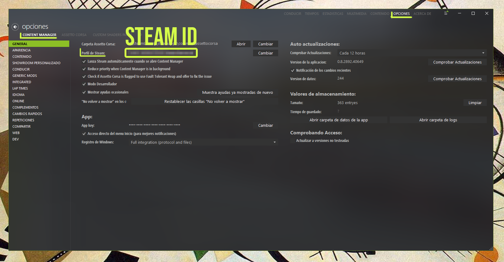
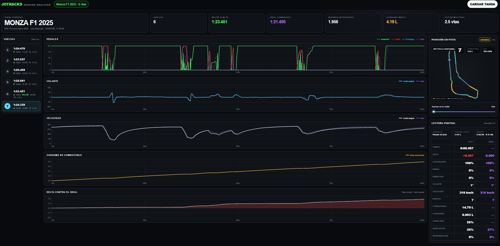

01 / CARRERA
RESULTADO
DE LA FECHA
- Cargando resultados…

ETAPA 4 · RESULTADO OFICIAL
ÚLTIMA CARRERA · CIRCUIT OF THE AMERICAS
Resultado oficial del campeonato.
| POS. | PILOTO | ESCUDERÍA | GRILLA | NEUMÁTICOS | TIEMPO FINAL | ESTADO |
|---|
La tabla se calcula desde los resultados cargados para cada carrera.
| POS. | PILOTO | ESCUDERÍA | VICTORIAS | PUNTOS |
|---|
| POS. | ESCUDERÍA | PILOTOS | PUNTOS |
|---|
Cuatro etapas · seis fechas por etapa · domingos 21:00 ARG.
Crónicas, datos y momentos de cada carrera.
La página más reciente aparece primero. Usá los controles para hojear y ampliar.
Normas vigentes para todos los pilotos inscriptos.
El campeonato es competitivo y prioriza el respeto en pista en todas las sesiones. La organización se reserva el derecho de admisión y permanencia.
Las maniobras peligrosas o antideportivas se sancionan. El reglamento puede modificarse durante el campeonato; rige siempre la última versión publicada.
El fondo corresponde a un porcentaje de las inscripciones y lo define la organización. Distribución: 1.º 45%, 2.º 35%, 3.º 20%. El monto total se comunica antes de cada mini campeonato.
Solo suman puntos los pilotos inscriptos y clasificados en el resultado oficial. Las penalizaciones pueden modificar la clasificación.
24 fechas divididas en cuatro etapas de seis carreras. Cualquier cambio se refleja en el calendario oficial.
6 carreras · Nombre y apellido · Steam ID
La inscripción incluye las seis carreras de la etapa en curso.
La inscripción cubre seis carreras de la etapa vigente.
$15.000 ARS PAGAR EN MERCADO PAGO ↗Completá el mensaje de WhatsApp con tu nombre y apellido y Steam ID.
El acceso al servidor y al grupo privado se envía después de validar tus datos.
Content Manager → Opciones → General → Perfil de Steam. Copiá el número largo.

La grilla tiene un máximo de 20 lugares. La disponibilidad se actualiza desde la configuración de la página.
Referencia para evaluar incidentes. Cada caso considera contexto, daño, posición devuelta y reincidencia.
Perjuicio menor o riesgo controlado.
Daño deportivo real o pérdida relevante.
Incidente fuerte, trompo claro o carrera comprometida.
Conducción temeraria, deliberada o extremadamente peligrosa.
Los comisarios revisan repeticiones, cámaras y telemetría disponible.
Presentala dentro de las dos horas posteriores a la carrera. Adjuntá video, vuelta y pilotos involucrados.
Una sanción automática se apela con evidencia técnica objetiva, dentro del plazo informado por la organización.
Analizá tus vueltas o consultá el live timing del servidor.
Compará vueltas, frenadas, marchas, combustible, neumáticos y tu ideal combinado. El análisis se procesa localmente.
DESCARGAR ANALIZADOR v0.4 ↧
Consultá el estado del servidor y el orden en pista. El panel se carga al entrar a esta pestaña.
ABRIR LIVE TIMING EN OTRA PESTAÑA ↗